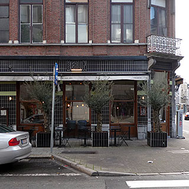

Berlin

Kleine Markt 1, Antwerp, 2000, Belgium 03 227 1101 51.215541, 4.402408
Good all-round cafe bar for lunch, dinner and cocktails
Berlin is a relatively large and modern cafe for Antwerp, which is mostly about small traditional places. There is plenty of seating, which fills up with shoppers for Saturday lunch, and a large bar that's a good place for cocktails with your ten newest friends in the evening.
On our first visit, we sat at the bar and had a pretty good evening meal on a quiet weekday evening when there were still tables free, but not too many. We went back another time later in the evening, and the place was packed. Both times, the atmosphere was great - both quiet lounge style, and lively bar style. It was only the third time on Saturday lunch that the atmosphere seemed a little cold, despite the place being full up for lunch.
The location is somewhat out-of-the-way, which is probably a good thing, because it would be far too packed if it were easier to find.